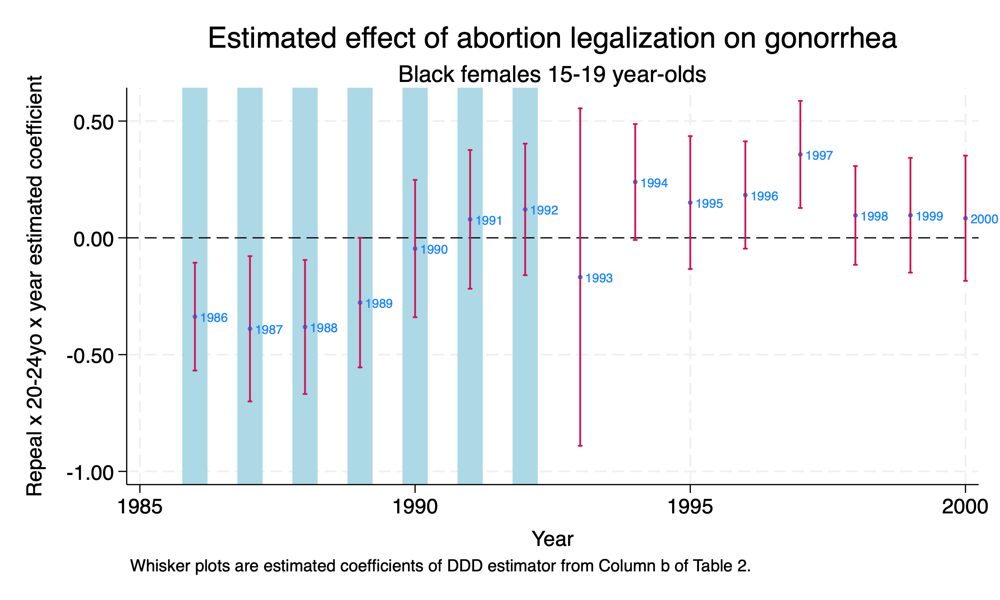
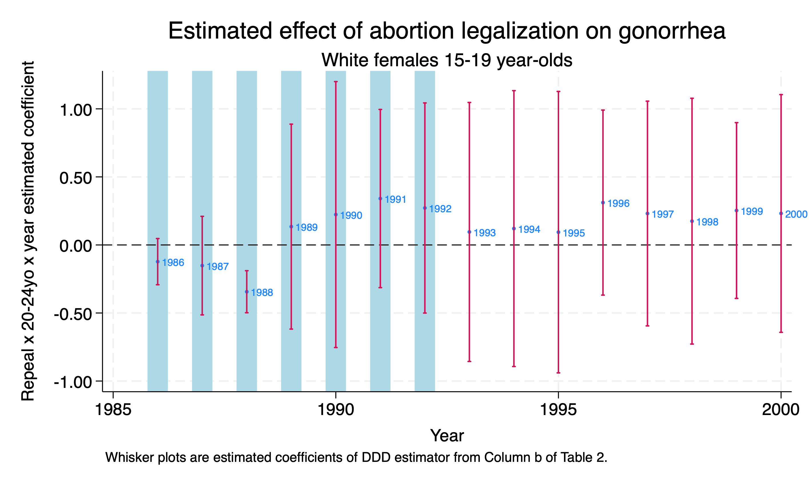
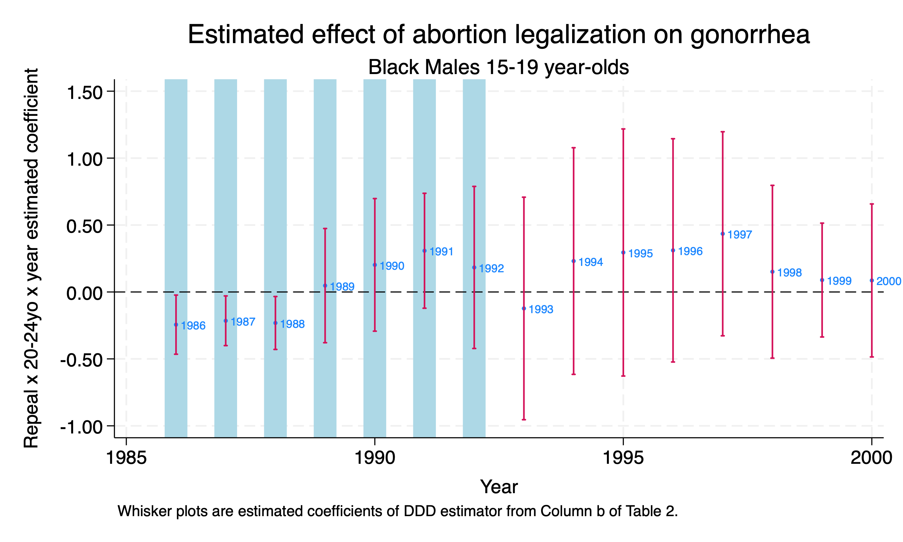
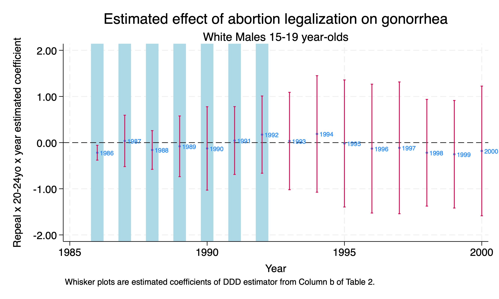
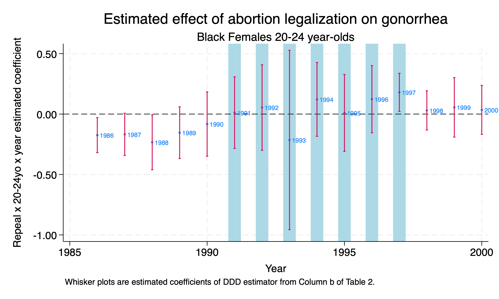

Chapter 1 Difference-in-Difference-in-Differences
We’ll bring back Cunningham and Cornwell (2013) to assess the impact of abortion on long-term gonorrhea incidencess. The abortion hypothesis from Gruber, Levine, and Staiger (1999) makes very specific predictions about reproductive health and poverty outcomes. If there are far-reaching effects of abortion legalization in the early 1970s, then some of those effects will show up later. Levitt (2004) finds controversial evidence that abortion legalization caused a 10% decline in crime between 1991 an 2001.
The authors’ focus on long-term gonorrehea cases is due to the correlation between single-parent status and risky behaviors. The authors focus on 15-19 year olds, since they would have been treated in the 5 early adopter states before complete legalization.
The authors use 25-29 year olds for a comparison group. The reason is that 25-29 year olds would be exposed to treatment but should not be affected by the treatment but close enough to 15-19 to prevent spillover effects.
1.1 The Estimator
Our Difference-in-Difference-in-Differences (DDD) is the following:
\[ y_{ijt} = \alpha + \psi X_{ijt} + \beta_{1} \tau_{t} + \beta_{2} \delta _{j} + \beta_{3} D_{i} + \beta_{4} (\delta * \tau)_{jt} + \beta_{5} (\tau * D)_{tj} + \beta_{6} (\delta*D) + \beta_{7} (\gamma*\tau*D)_{ijt} + \varepsilon_{ijt} \]
All interactions are included in a DDD design
- Treatment group dummy \(D_i\)
- Post-treatment dummy \(\tau_{t}\)
- Group dummy \(\delta_{j}\)
- \(X_{ijt}\) is a set of covariates of interest
Where
- \(D_{i}\) represents treatment state (5 adapters) and our control states
- \(\tau_{t}\) represents prepost-post period 1986-1992 and post-1992
- \(\delta_{j}\) represents our two groups of 15-19 vs 25-29 year olds
Our parameter of interest is \(\beta_{7}\) to compare our DDD estimate to our original DD estimate. \(\beta_{7}\) is the full-interaction term. We want to test \(\beta_{7}\) to see if it is similar to our original difference-in-difference estimate.
Our diff-in-diff parameter for the placebo group is \(\beta_{5}\). We should expect to fail to reject the null hypothesis that \(H_{0}: \beta_{5}=0\).
1.2 15-19 year olds vs. 20-24 year olds
Let’s read in our data and prepare it. We’ll set up our demographic groups first.
cd "/Users/Sam/Desktop/Econ 672/Data/"
use "abortion.dta", clear
gen yr=(repeal) & (younger==1)
*White Male
gen wm=(wht==1) & (male==1)
*White Female
gen wf=(wht==1) & (male==0)
*Black Male
gen bm=(wht==0) & (male==1)
*Black Female
gen bf=(wht==0) & (male==0)
char year[omit] 1985
char repeal[omit] 0
char younger[omit] 0
char fip[omit] 1
char fa[omit] 0
char yr[omit] 0 /Users/Sam/Desktop/Econ 672/DataThen we will estimate the DDD estimate for 15-19 year olds vs. 20-24 year olds in repeal vs Roe states without fixed effects.
reg lnr i.repeal##i.year##i.younger i.fip##c.t acc pi ir alcohol crack poverty income ur if bf==1 & (age==15 | age==25) [aweight=totpop], cluster(fip)(sum of wgt is 83,359,689)
note: 53.fip omitted because of collinearity.
note: t omitted because of collinearity.
note: 53.fip#c.t omitted because of collinearity.
Linear regression Number of obs = 1,437
F(41, 50) = .
Prob > F = .
R-squared = 0.9152
Root MSE = .25462
(Std. err. adjusted for 51 clusters in fip)
--------------------------------------------------------------------------------
| Robust
lnr | Coefficient std. err. t P>|t| [95% conf. interval]
---------------+----------------------------------------------------------------
1.repeal | .1632272 .2576836 0.63 0.529 -.3543455 .6807999
|
year |
1986 | -.165378 .1279892 -1.29 0.202 -.4224519 .0916958
1987 | -.3698162 .1391357 -2.66 0.011 -.6492785 -.0903539
1988 | -.3800703 .1566106 -2.43 0.019 -.6946319 -.0655087
1989 | -.3842067 .1766438 -2.18 0.034 -.7390063 -.0294071
1990 | -.4217426 .1995766 -2.11 0.040 -.8226039 -.0208813
1991 | -.5451351 .2281037 -2.39 0.021 -1.003295 -.0869754
1992 | -.7745616 .2802143 -2.76 0.008 -1.337389 -.2117346
1993 | -1.251466 .4434538 -2.82 0.007 -2.142169 -.3607631
1994 | -1.07897 .3129618 -3.45 0.001 -1.707572 -.4503677
1995 | -1.400012 .3944501 -3.55 0.001 -2.192288 -.6077355
1996 | -1.498323 .3861419 -3.88 0.000 -2.273911 -.7227338
1997 | -1.542576 .4198254 -3.67 0.001 -2.38582 -.6993321
1998 | -1.471983 .4647098 -3.17 0.003 -2.40538 -.5385856
1999 | -1.516729 .4854222 -3.12 0.003 -2.491728 -.5417294
2000 | -1.556858 .5588659 -2.79 0.008 -2.679373 -.4343426
|
repeal#year |
1 1986 | .1532595 .1528445 1.00 0.321 -.1537378 .4602568
1 1987 | .0897675 .1613556 0.56 0.580 -.2343248 .4138598
1 1988 | -.2081356 .2326221 -0.89 0.375 -.6753708 .2590997
1 1989 | -.5113889 .2844963 -1.80 0.078 -1.082817 .0600388
1 1990 | -.6599403 .2074843 -3.18 0.003 -1.076685 -.2431959
1 1991 | -.8084183 .205713 -3.93 0.000 -1.221605 -.3952316
1 1992 | -.7751547 .2643143 -2.93 0.005 -1.306046 -.2442638
1 1993 | -.4947027 .3389076 -1.46 0.151 -1.175419 .1860132
1 1994 | -.8088745 .2374756 -3.41 0.001 -1.285858 -.3318908
1 1995 | -.6549101 .270693 -2.42 0.019 -1.198613 -.1112073
1 1996 | -.9601593 .2358612 -4.07 0.000 -1.4339 -.4864181
1 1997 | -1.120558 .2610365 -4.29 0.000 -1.644865 -.5962507
1 1998 | -1.079713 .3078719 -3.51 0.001 -1.698092 -.4613344
1 1999 | -1.135914 .3387383 -3.35 0.002 -1.81629 -.455538
1 2000 | -1.18652 .4198777 -2.83 0.007 -2.02987 -.3431712
|
1.younger | .6982536 .1147531 6.08 0.000 .4677653 .9287419
|
repeal#younger |
1 1 | -.0721284 .1258185 -0.57 0.569 -.3248423 .1805856
|
year#younger |
1986 1 | .1165885 .1145906 1.02 0.314 -.1135735 .3467506
1987 1 | .0876298 .1011899 0.87 0.391 -.115616 .2908757
1988 1 | .0855004 .1289568 0.66 0.510 -.1735168 .3445177
1989 1 | .088618 .1299416 0.68 0.498 -.1723774 .3496134
1990 1 | .1158344 .1461543 0.79 0.432 -.1777252 .409394
1991 1 | .1872056 .1276435 1.47 0.149 -.0691739 .4435851
1992 1 | .2187408 .1389343 1.57 0.122 -.0603169 .4977984
1993 1 | .5224545 .3594503 1.45 0.152 -.1995227 1.244432
1994 1 | .2955902 .1126398 2.62 0.011 .0693465 .5218339
1995 1 | .3851888 .1375715 2.80 0.007 .1088683 .6615093
1996 1 | .3720165 .114905 3.24 0.002 .1412231 .6028099
1997 1 | .3759459 .1164935 3.23 0.002 .1419618 .6099301
1998 1 | .3535247 .1081798 3.27 0.002 .1362391 .5708102
1999 1 | .3643688 .1195171 3.05 0.004 .1243115 .604426
2000 1 | .3537662 .1166262 3.03 0.004 .1195157 .5880168
|
repeal#year#|
younger |
1 1986 1 | -.3374017 .1148788 -2.94 0.005 -.5681426 -.1066607
1 1987 1 | -.3893566 .1548238 -2.51 0.015 -.7003293 -.0783839
1 1988 1 | -.3816576 .1428039 -2.67 0.010 -.6684877 -.0948276
1 1989 1 | -.2773647 .1381061 -2.01 0.050 -.5547589 .0000295
1 1990 1 | -.0460118 .1463254 -0.31 0.754 -.339915 .2478915
1 1991 1 | .0790799 .147817 0.53 0.595 -.2178193 .3759791
1 1992 1 | .1217134 .1401274 0.87 0.389 -.1597407 .4031675
1 1993 1 | -.1680948 .3596801 -0.47 0.642 -.8905337 .554344
1 1994 1 | .239085 .1235894 1.93 0.059 -.0091516 .4873217
1 1995 1 | .1509293 .1416239 1.07 0.292 -.1335306 .4353892
1 1996 1 | .1833938 .1143968 1.60 0.115 -.046379 .4131666
1 1997 1 | .35702 .1140921 3.13 0.003 .1278592 .5861808
1 1998 1 | .0960569 .1051921 0.91 0.366 -.1152277 .3073415
1 1999 1 | .0967503 .1222801 0.79 0.433 -.1488565 .342357
1 2000 1 | .0839178 .1334809 0.63 0.532 -.1841866 .3520221
|
fip |
2 | -.8120592 .3355711 -2.42 0.019 -1.486074 -.1380449
4 | .1228053 .3134889 0.39 0.697 -.5068556 .7524662
5 | -.1766227 .0298097 -5.93 0.000 -.2364972 -.1167482
6 | -.1200182 .1449951 -0.83 0.412 -.4112493 .171213
8 | -.0783986 .3136868 -0.25 0.804 -.708457 .5516599
9 | -.6579097 .4593995 -1.43 0.158 -1.580641 .2648213
10 | .0367743 .3593092 0.10 0.919 -.6849195 .758468
11 | .1081184 .5422609 0.20 0.843 -.9810446 1.197281
12 | .2535634 .3111603 0.81 0.419 -.3714205 .8785473
13 | -.0944965 .1693867 -0.56 0.579 -.4347197 .2457267
15 | -2.344423 .1920494 -12.21 0.000 -2.730165 -1.95868
16 | -.6301702 .2210445 -2.85 0.006 -1.074151 -.1861892
17 | -.3120264 .267051 -1.17 0.248 -.8484142 .2243614
18 | .0038511 .2238371 0.02 0.986 -.445739 .4534413
19 | -.0518566 .2232802 -0.23 0.817 -.5003282 .396615
20 | .0487544 .2461016 0.20 0.844 -.4455552 .5430641
21 | -.0881486 .058344 -1.51 0.137 -.205336 .0290388
22 | -.8473393 .1650287 -5.13 0.000 -1.178809 -.5158693
23 | -1.671066 .3661742 -4.56 0.000 -2.406548 -.9355832
24 | -1.053722 .3446372 -3.06 0.004 -1.745947 -.3614982
25 | -.5968925 .3391608 -1.76 0.085 -1.278117 .084332
26 | .075925 .2916544 0.26 0.796 -.5098801 .6617301
27 | .0083988 .2311591 0.04 0.971 -.4558979 .4726955
28 | -.2127531 .1539994 -1.38 0.173 -.52207 .0965638
29 | .2222519 .1765713 1.26 0.214 -.1324019 .5769057
30 | -.696597 .2533265 -2.75 0.008 -1.205418 -.1877757
31 | -.1856806 .3453238 -0.54 0.593 -.8792839 .5079227
32 | .1671913 .6515857 0.26 0.799 -1.141557 1.47594
33 | -2.971374 .6302908 -4.71 0.000 -4.237351 -1.705398
34 | -1.081517 .4220763 -2.56 0.013 -1.929282 -.2337519
35 | -.8538008 .1782373 -4.79 0.000 -1.211801 -.4958008
36 | -2.11072 .2153852 -9.80 0.000 -2.543334 -1.678106
37 | -.0724538 .2182202 -0.33 0.741 -.510762 .3658543
38 | -2.087642 .2894568 -7.21 0.000 -2.669033 -1.506251
39 | -.2748486 .2266876 -1.21 0.231 -.730164 .1804667
40 | -.0365997 .1316638 -0.28 0.782 -.3010542 .2278548
41 | -.8204083 .2665903 -3.08 0.003 -1.355871 -.2849459
42 | .0952371 .2729022 0.35 0.729 -.4529031 .6433774
44 | -.3479632 .3305076 -1.05 0.297 -1.011807 .3158808
45 | -1.03916 .1748983 -5.94 0.000 -1.390454 -.6878669
46 | -1.51665 .2116141 -7.17 0.000 -1.941689 -1.09161
47 | .3278838 .0792663 4.14 0.000 .1686728 .4870948
48 | -.2487844 .1929235 -1.29 0.203 -.6362826 .1387138
49 | -.6264741 .2875367 -2.18 0.034 -1.204009 -.0489396
50 | -1.201195 .3867603 -3.11 0.003 -1.978026 -.4243645
51 | -.6199041 .3134695 -1.98 0.054 -1.249526 .0097178
53 | 0 (omitted)
54 | -1.148676 .1493309 -7.69 0.000 -1.448616 -.8487362
55 | .5668324 .3933499 1.44 0.156 -.2232341 1.356899
56 | -1.249674 .3478953 -3.59 0.001 -1.948442 -.5509054
|
t | 0 (omitted)
|
fip#c.t |
2 | .0244529 .0230627 1.06 0.294 -.0218699 .0707757
4 | -.030395 .0189648 -1.60 0.115 -.068487 .007697
5 | .0128733 .004243 3.03 0.004 .0043509 .0213957
6 | .007093 .0087707 0.81 0.423 -.0105234 .0247094
8 | -.0071186 .0224994 -0.32 0.753 -.05231 .0380728
9 | .0161712 .0453102 0.36 0.723 -.074837 .1071795
10 | .0117182 .0197663 0.59 0.556 -.0279836 .05142
11 | -.0032102 .0596737 -0.05 0.957 -.1230683 .1166479
12 | -.0304593 .0165437 -1.84 0.072 -.0636884 .0027697
13 | -.0388817 .014716 -2.64 0.011 -.0684396 -.0093238
15 | .1492851 .013845 10.78 0.000 .1214766 .1770936
16 | -.0746169 .01237 -6.03 0.000 -.0994627 -.0497711
17 | .0345409 .0186901 1.85 0.071 -.0029992 .072081
18 | .0100973 .0111422 0.91 0.369 -.0122824 .032477
19 | .0149253 .0077716 1.92 0.061 -.0006845 .030535
20 | .0292349 .0134707 2.17 0.035 .0021782 .0562916
21 | -.0086793 .0068655 -1.26 0.212 -.0224691 .0051105
22 | .0498841 .0101856 4.90 0.000 .0294257 .0703425
23 | .0056534 .0214149 0.26 0.793 -.0373596 .0486664
24 | .0440399 .0242775 1.81 0.076 -.004723 .0928028
25 | -.0418595 .0361971 -1.16 0.253 -.1145636 .0308446
26 | -.0361967 .0166168 -2.18 0.034 -.0695725 -.002821
27 | .0162542 .0197497 0.82 0.414 -.0234143 .0559228
28 | .0213194 .0078145 2.73 0.009 .0056236 .0370153
29 | .0085451 .0086156 0.99 0.326 -.0087599 .0258501
30 | -.0169654 .0105426 -1.61 0.114 -.0381409 .0042102
31 | .0353449 .0193409 1.83 0.074 -.0035023 .0741922
32 | -.05923 .0296812 -2.00 0.051 -.1188464 .0003864
33 | .113456 .0268937 4.22 0.000 .0594385 .1674736
34 | -.0147 .0362213 -0.41 0.687 -.0874527 .0580527
35 | .005181 .0188962 0.27 0.785 -.0327731 .043135
36 | .1242363 .0100497 12.36 0.000 .104051 .1444216
37 | .0167285 .0174907 0.96 0.343 -.0184026 .0518595
38 | .0392796 .0166212 2.36 0.022 .005895 .0726642
39 | .0129426 .0154794 0.84 0.407 -.0181486 .0440338
40 | .02788 .0106636 2.61 0.012 .0064614 .0492985
41 | .0285276 .0195652 1.46 0.151 -.0107703 .0678255
42 | -.018509 .0212777 -0.87 0.389 -.0612465 .0242284
44 | .0009555 .0244091 0.04 0.969 -.0480715 .0499825
45 | .0438337 .008594 5.10 0.000 .0265721 .0610952
46 | .0462614 .0174768 2.65 0.011 .0111581 .0813646
47 | -.0210074 .0091351 -2.30 0.026 -.0393557 -.002659
48 | .007767 .0158324 0.49 0.626 -.0240332 .0395673
49 | -.0864221 .0160945 -5.37 0.000 -.1187488 -.0540954
50 | .0000726 .0221555 0.00 0.997 -.0444281 .0445733
51 | .0198732 .019582 1.01 0.315 -.0194583 .0592048
53 | 0 (omitted)
54 | .0671996 .0113235 5.93 0.000 .0444556 .0899436
55 | -.0154737 .0200596 -0.77 0.444 -.0557645 .0248172
56 | .0073057 .0281259 0.26 0.796 -.0491867 .0637982
|
acc | -.0011368 .0020799 -0.55 0.587 -.0053145 .0030409
pi | -.0244522 .0468311 -0.52 0.604 -.1185152 .0696109
ir | -.0000504 .000101 -0.50 0.620 -.0002533 .0001525
alcohol | -.024153 .1789552 -0.13 0.893 -.383595 .335289
crack | .0418238 .0366812 1.14 0.260 -.0318526 .1155002
poverty | .0181194 .0280102 0.65 0.521 -.0381408 .0743797
income | .0000232 .0000526 0.44 0.661 -.0000824 .0001289
ur | -.0428437 .0378736 -1.13 0.263 -.118915 .0332277
_cons | 7.994616 .959291 8.33 0.000 6.067823 9.921408
--------------------------------------------------------------------------------We reject the null hypothesis that coefficients for the DDD estimators in 1986-1989 are 0 for 15-19 year olds, and we conlude that the rates of long-term gonorrehea declines in the earlier adopters at the 5% level for 15-19 year olds.
We do notice that we reject the null hypothesis for parameters in 1991-1992 for 25-29 year olds for i.repeal##i.year interactions. This can possibility be a concern.
Next, we will plot our DDD parameters estimates.
xi: reg lnr i.repeal*i.year i.younger*i.repeal i.younger*i.year i.yr*i.year ///
i.fip*t acc pi ir alcohol crack poverty income ur if bf==1 & (age==15 | age==25) ///
[aweight=totpop], cluster(fip)
*Parameter Estimate into dataframe
parmest, label for(estimate min95 max95 %8.2f) li(parm label estimate min95 max95) saving(bf15_DDD.dta, replace)
*Get Parameter Estimate Dataframe
use ./bf15_DDD.dta, replace
*Keep Triple Difference-in-Differences Parameter Estimates only
keep in 82/96
gen year=.
replace year=1986 in 1
replace year=1987 in 2
replace year=1988 in 3
replace year=1989 in 4
replace year=1990 in 5
replace year=1991 in 6
replace year=1992 in 7
replace year=1993 in 8
replace year=1994 in 9
replace year=1995 in 10
replace year=1996 in 11
replace year=1997 in 12
replace year=1998 in 13
replace year=1999 in 14
replace year=2000 in 15
sort year
*Graph the Triple Diff-in-Diff
twoway (scatter estimate year, mlabel(year) mlabsize(vsmall) msize(tiny)) ///
(rcap min95 max95 year, msize(vsmall)), ///
ytitle(Repeal x 20-24yo x year estimated coefficient) yscale(titlegap(2)) ///
yline(0, lwidth(thin) lcolor(black)) xtitle(Year) ///
xline(1986 1987 1988 1989 1990 1991 1992, lwidth(vvvthick) lpattern(solid) ///
lcolor(ltblue)) xscale(titlegap(2)) ///
title(Estimated effect of abortion legalization on gonorrhea) ///
subtitle(Black females 15-19 year-olds) ///
note(Whisker plots are estimated coefficients of DDD estimator from Column b of Table 2.) ///
legend(off)
It is interesting that we fail to reject the null hypothesis for 15-19 year olds in 1991-1992, but we reject the null hypothesis for 25-29 year olds in 1991-1992.
We can run the estimates for White women, Black males, and White males. The code is the same as above with the exception of the subset.

We fail to reject the null hypothesis that parameters for the DDD estimator are 0 with the exception of 1988.

We reject the null hypothesis that the parameters of the DDD estimator is 0 for 1986-1988, but we fail to reject the null hypothesis for years 1989-1992.

We fail to reject the null hypothesis that the parameters of the DDD estimator are 0 for White Males, except for 1986.
These results show that the policy impacts may vary by demographics. However, these tests show some support to what Cunningham and Cornwell (2013) hypothesis. However, as Cunningham (2021) notes the abortion hypothesis makes very specific predictions, and we fail to find a parabolic relationship.
1.3 20-24 year olds vs 25-29 year olds
Next, we will conduct the same exercise, but we will focus on 20-24 year olds.
quietly {
use "/Users/Sam/Desktop/Econ 672/Data/abortion.dta", clear
Second DDD model for 20-24 year olds vs 25-29 year olds black females in repeal vs Roe states
gen younger2 = 0
replace younger2 = 1 if age == 20
gen yr2=(repeal==1) & (younger2==1)
gen wm=(wht==1) & (male==1)
gen wf=(wht==1) & (male==0)
gen bm=(wht==0) & (male==1)
gen bf=(wht==0) & (male==0)
char year[omit] 1985
char repeal[omit] 0
char younger2[omit] 0
char fip[omit] 1
char fa[omit] 0
char yr2[omit] 0
*Triple DDD
*Compare 20-24 to 25-29 year olds in repeal vs Roe states
*OR
reg lnr i.repeal##i.year##i.younger2 i.fip##c.t acc pi ir alcohol crack poverty ///
income ur if bf==1 & (age==20 | age==25) [aweight=totpop], cluster(fip)
*XI
xi: reg lnr i.repeal*i.year i.younger2*i.repeal i.younger2*i.year i.yr2*i.year ///
i.fip*t acc pi ir alcohol crack poverty income ur if bf==1 & (age==20 | age==25) ///
[aweight=totpop], cluster(fip)
parmest, label for(estimate min95 max95 %8.2f) li(parm label estimate min95 max95) saving(bf20_DDD.dta, replace)
*Get Parameter Estimate Dataframe
use ./bf20_DDD.dta, replace
keep in 82/96
gen year=.
replace year=1986 in 1
replace year=1987 in 2
replace year=1988 in 3
replace year=1989 in 4
replace year=1990 in 5
replace year=1991 in 6
replace year=1992 in 7
replace year=1993 in 8
replace year=1994 in 9
replace year=1995 in 10
replace year=1996 in 11
replace year=1997 in 12
replace year=1998 in 13
replace year=1999 in 14
replace year=2000 in 15
sort year
}
*Graph the Triple Diff-in-Diff
twoway (scatter estimate year, mlabel(year) mlabsize(vsmall) msize(tiny)) ///
(rcap min95 max95 year, msize(vsmall)), ///
ytitle(Repeal x 20-24yo x year estimated coefficient) yscale(titlegap(2)) ///
yline(0, lwidth(thin) lcolor(black)) xtitle(Year) ///
xline(1991 1992 1993 1994 1995 1996 1997, lwidth(vvvthick) lpattern(solid) ///
lcolor(ltblue)) xscale(titlegap(2)) ///
title(Estimated effect of abortion legalization on gonorrhea) ///
subtitle(Black Females 20-24 year-olds) ///
note(Whisker plots are estimated coefficients of DDD estimator from Column b of Table 2.) ///
legend(off)
We fail to reject the null hypothesis in the time period of interest. One concern is that 20-24 year olds are too close in age to 25-29 year olds for a comparison. If these groups are interacting, then we will have a spillover effect. This spillover effect will violate our Stable Unit Treatment Value Assumptions (SUTVA).
The abortion hypothesis provides very specific predictions, and our results show some skepticism for the abortion hypothesis explaining long-term gonorrehea incidences.